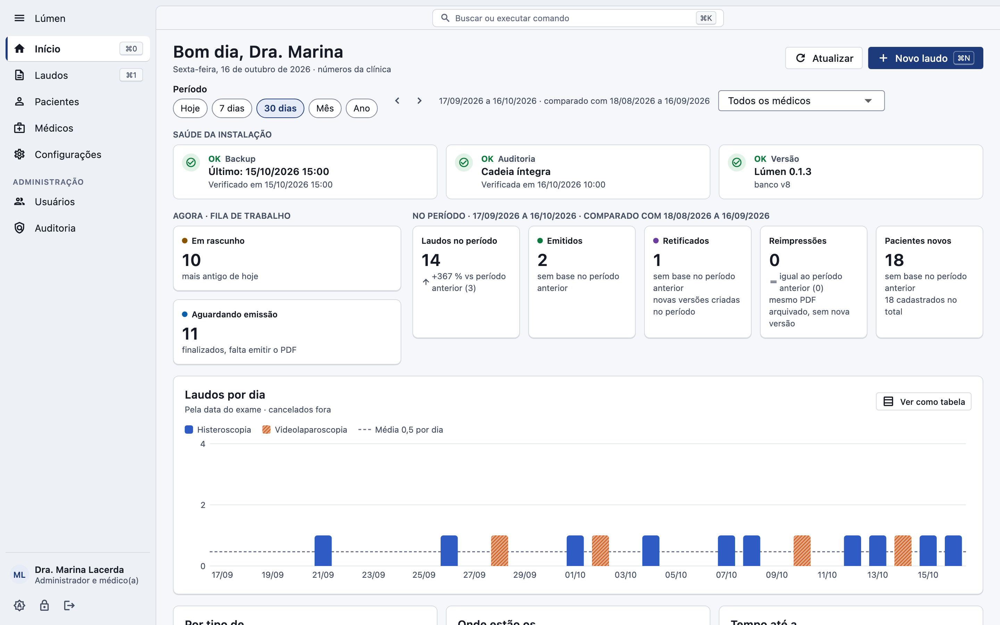
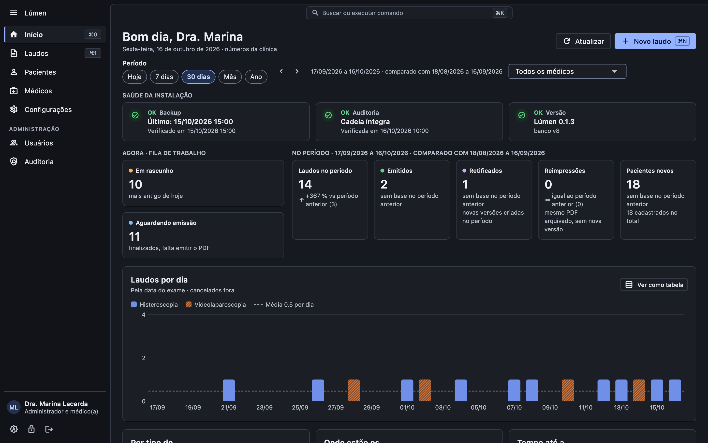

Lúmen
LúmenAbra o dia pelo Início
Rascunhos, laudos aguardando emissão e o estado do backup, com a comparação do período anterior.
O Lúmen é o sistema de laudos de histeroscopia e videolaparoscopia da Hallen Tech: modelos de texto, imagens da câmera, revisão do PDF e emissão arquivada, com os dados cifrados no computador da clínica.
 Lúmen
Lúmen

Role a página: cada passo mostra a tela correspondente.
Rascunhos, laudos aguardando emissão e o estado do backup, com a comparação do período anterior.
Busca por paciente e filtros por situação, tipo e período. O resumo do laudo aparece ao lado.
Seções de cada exame, modelos da clínica ou seus, salvamento automático e as imagens da câmera ao lado.
O PDF final na tela, conferido item a item. Emitido, ele é arquivado com uma impressão digital e não muda mais.
Arraste para comparar. O Lúmen acompanha o tema do Windows e do macOS, ou fica no que você escolher.


Cópias cifradas em outro disco, verificadas, com restauração guiada. O último backup aparece no Início.
LúmenTextos prontos por tipo de exame, com busca e o modelo preferido de cada médico.
Importação do MedCam somente leitura e arraste de arquivos do Explorer ou do Finder.
Ctrl ou ⌘ para trocar de tela, abrir um laudo novo, buscar e emitir.
Texto até 200%, contraste de leitura, navegação por teclado e rótulos para leitor de tela.
Importação de laudos, pacientes e imagens do sistema antigo, com simulação antes de gravar.
Laudos do período, rascunhos e o que falta emitir, sem expor conteúdo clínico a quem não é médico.
Pensado para a LGPD desde o começo.
A versão para Mac já pode ser baixada; a do Windows sai em breve. A implantação é acompanhada pela nossa equipe: instalação, importação do sistema anterior, backup e treinamento.